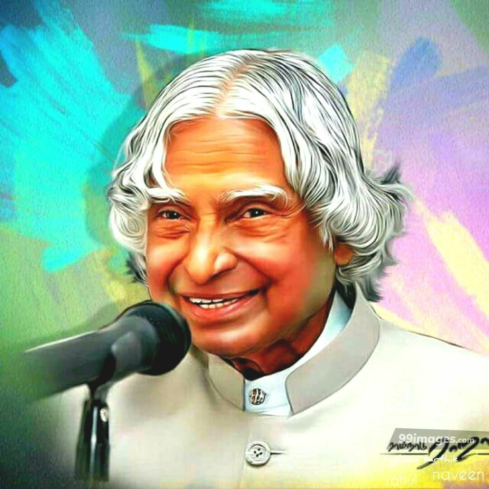

| Personal details | |
|---|---|
| Born | Avul Pakir Jainulabdeen Abdul Kalam 15 oct 1931 Rameshwaram,Madras Presidensy,British India (present-day Tamilnadu India |
| Died | 27 July 2015(aged 83) Shillong,Meghalaya,India |
| Resting place | Dr. A.P.J Abdul Kalam Desiya Ninaivagam,pei karumbu, Rameshwaram,Tamilnadu,India |
| Nationality | Indian |
| other political affialation | NDA |
| Alma mater | St Joseph's College, Tiruchirapalli(BEng) Madras institute of technology(MEng) |